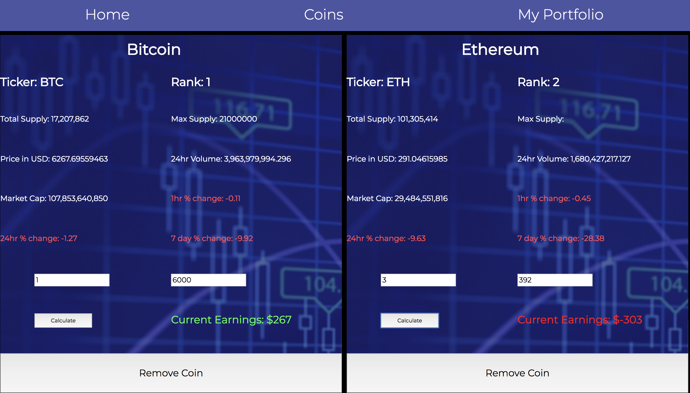
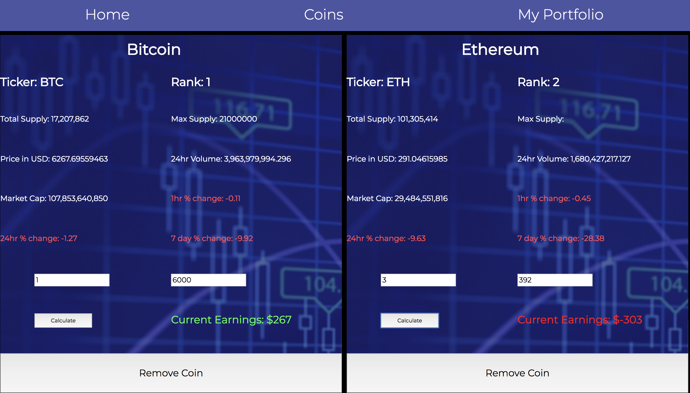

Crypto Portfolio

 

Crypto Portfolio is an entirely front end project using React and Redux. It serves as a fully functional portfolio that keeps track of your crypto currency investments. It pulls data from the coinmarketcap.com API and calculates how much money you have made or lost on your crypto investments. By persisting your data to local storage, it keeps track of your investments and updates when another request to the API is made. Thereby removing the need to calculate your own profits and losses.
Visit the site -->